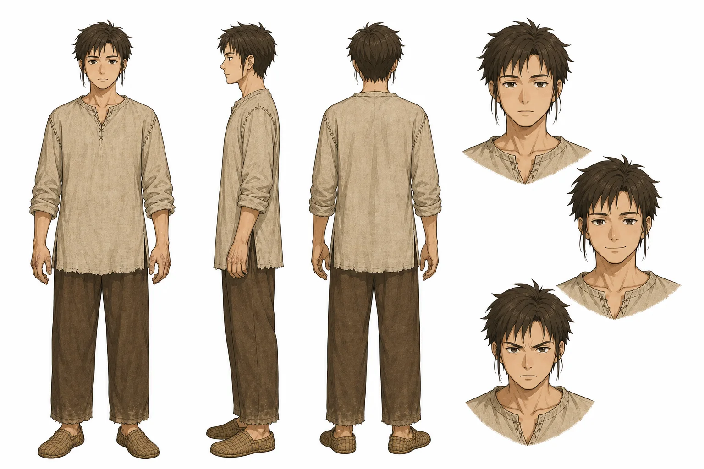

陸修
A young man in his early twenties, average height, lean with a quiet work-hardened build, NOT muscular, NOT heroic. Short messy dark-brown hair, a few loose strands hanging by his cheeks. Dark brown eyes, flat calm slightly tired expression (no dark circles). Rough beige-linen tunic with coarse visible seams, simple cord-laced collar, no pockets, old and slightly worn; loose earth-brown trousers with dusty hems; simple woven local shoes. Sturdy work-worn hands (calluses on knuckles only in close-ups, subtle). Muted palette, he blends into the background tones.